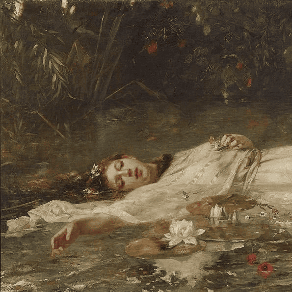
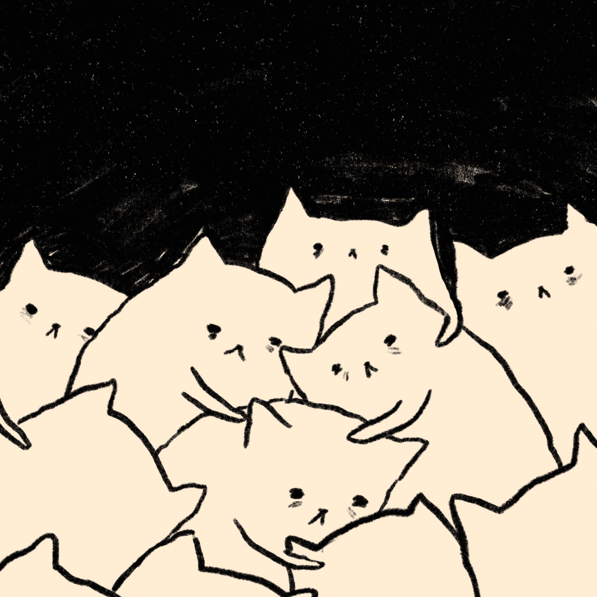
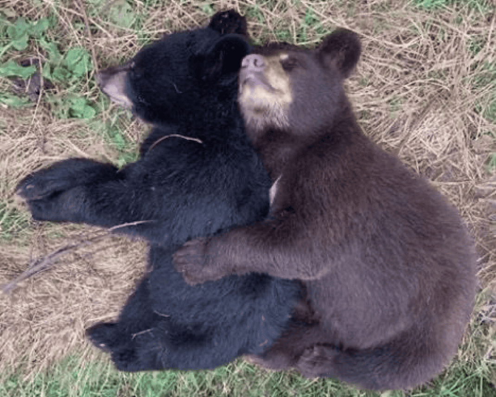
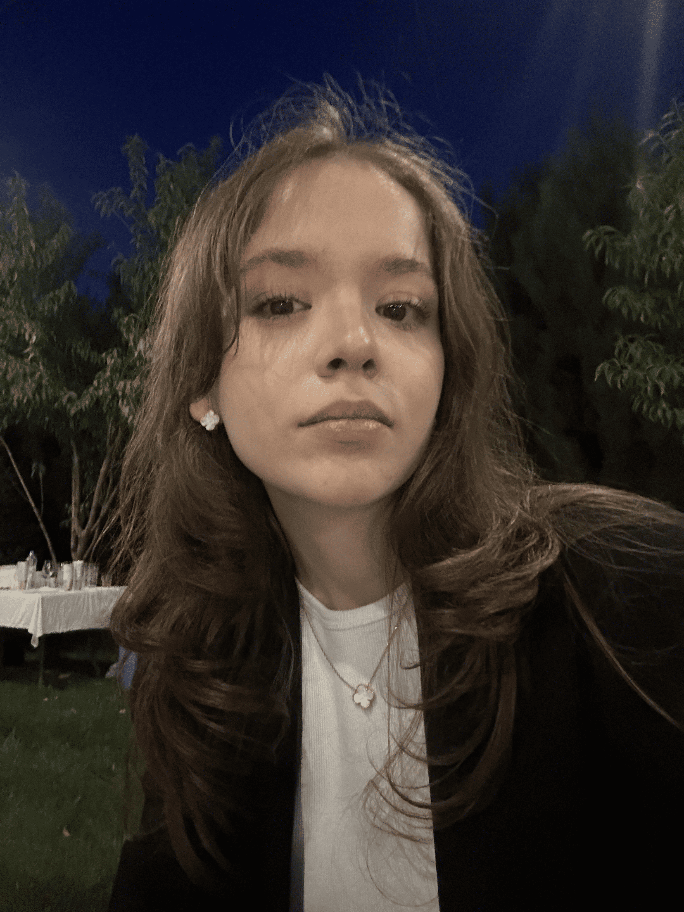
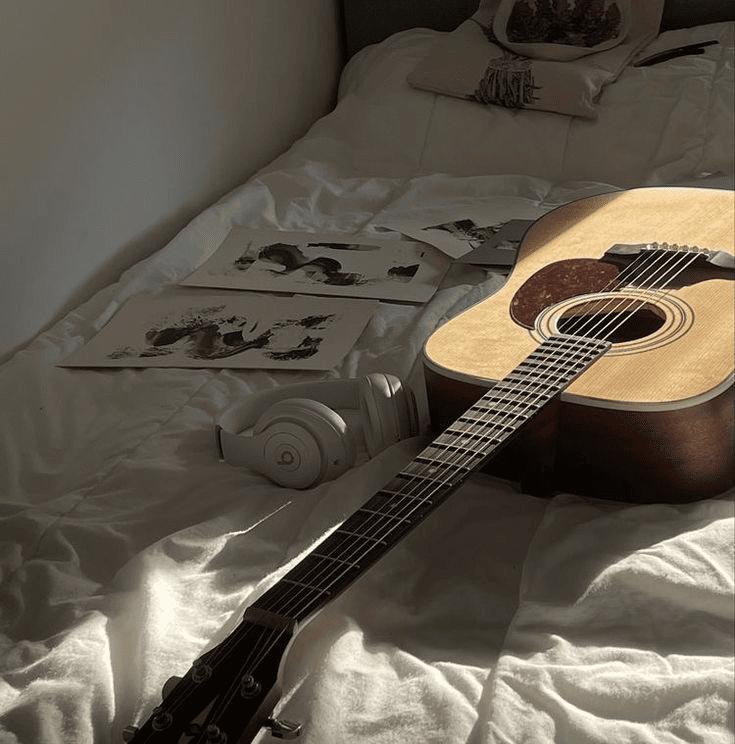
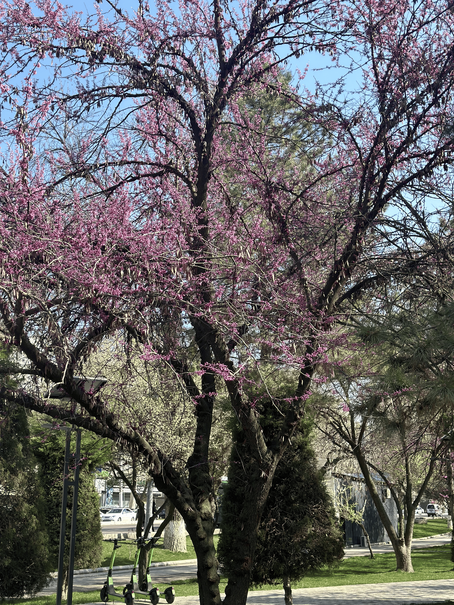

🧸 A little glimpse of me and some of my favourite pictures lately!






Hi! I'm Komilbekova Hulkarbonu, a 21-year-old Uzbek student currently in my second year at MDIST. I was born and raised in the heart of Tashkent—a city filled with culture, color, and creativity. Alongside my studies, I also work at a marketing company called TUZagentli, where I'm gaining hands-on experience while chasing my academic goals.
This website is more than just a digital introduction—it's a glimpse into who I am. I created it to share the things that make me smile, think, and dream. Whether it's a fresh batch of homemade cupcakes, a feminist essay, the latest tech breakthrough, or a peaceful guitar melody—each piece is a reflection of me.